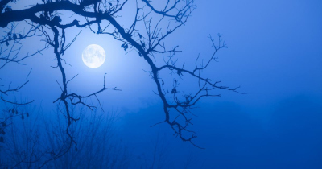
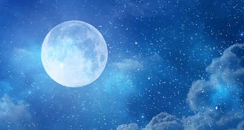
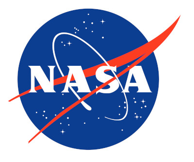

The Super Blue Moon is not what we would expect. It is not a blue moon at all. What this refers to is when a full Moon happens back to back. For example, on the 29th to the 31st we have a trifecta of full moons. This is known as a full moon, a supermoon, and a blue moon. The Moon travels in an elliptical orbit and when it is at it's nearest point to Earth, this is called a "Supermoon". The Moon doesn't necessarily turn blue, but it is a little bit closer than usual and appears large and bright in the sky.
If you have the opportunity to look at this spectical please do. About 25 percent of all full moons are supermoons, but only 3 percent of full moons are blue moons. Have no fear if you miss it though, the times between super blue moons is irregular, roughly 10 years but can be as long as 20 years. We wont be due for another until 2037, so sit tight.
The best time to see the Super Blue Moon will be Wednesday around 7pm and reach its peak at 9:36pm. Although this may be a short window, the moon will remain full through Thursday and Friday night.
The James Webb Space Telescope(JWST) is the largest and most powerful space telescope ever bult. It was launched by NASA on December 25,2021. With its high resolution and its high contrast this telescope will be able to see objects to old, to distant, or to faint for any other telescope. This telescope is equipped to view infrared radiation, somehting that is invisible to the human eye. It also wears a hat! This hat is a sunshield to protect its instruments and mirrors. This shield is about the size of a mirror
As of now the JWST has begun to study one of the most renowned supernovae, SN 1987A. Located aproxamately 168,000 light-years away in the Large Magellanic Cloud. This has been a target of intense observations at wavelengths ranging from gamma rays to radio for nearly 40 years, since its discovery in February of 1987.
